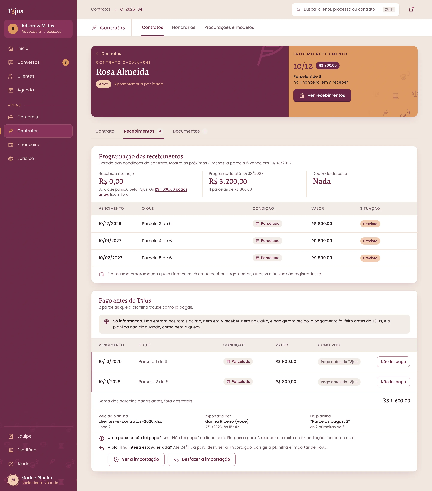
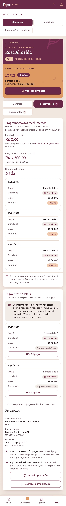

A folha com o botão em cada parcela
Marina Ribeiro, sócia dona, com Financeiro. Cada linha de “Pago antes do T3jus” tem “Não foi paga”. Embaixo, os dois caminhos: uma parcela (o botão) ou a planilha inteira (desfazer a importação, até 24/11, com “Ver a importação” e “Desfazer a importação”).
Abrir: contrato-nao-paga.html?estado=folha (estreite a janela para ver o celular)